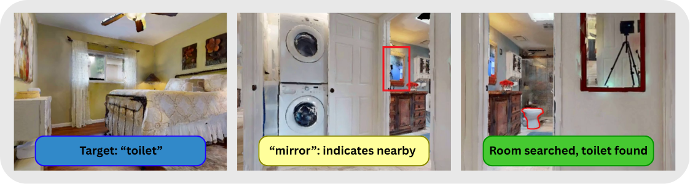
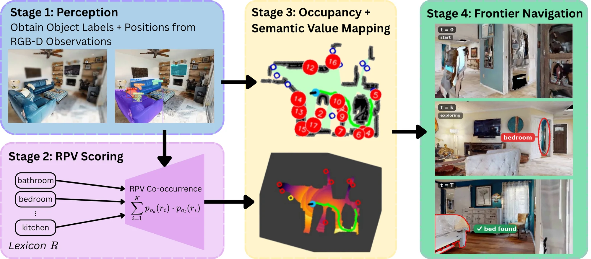
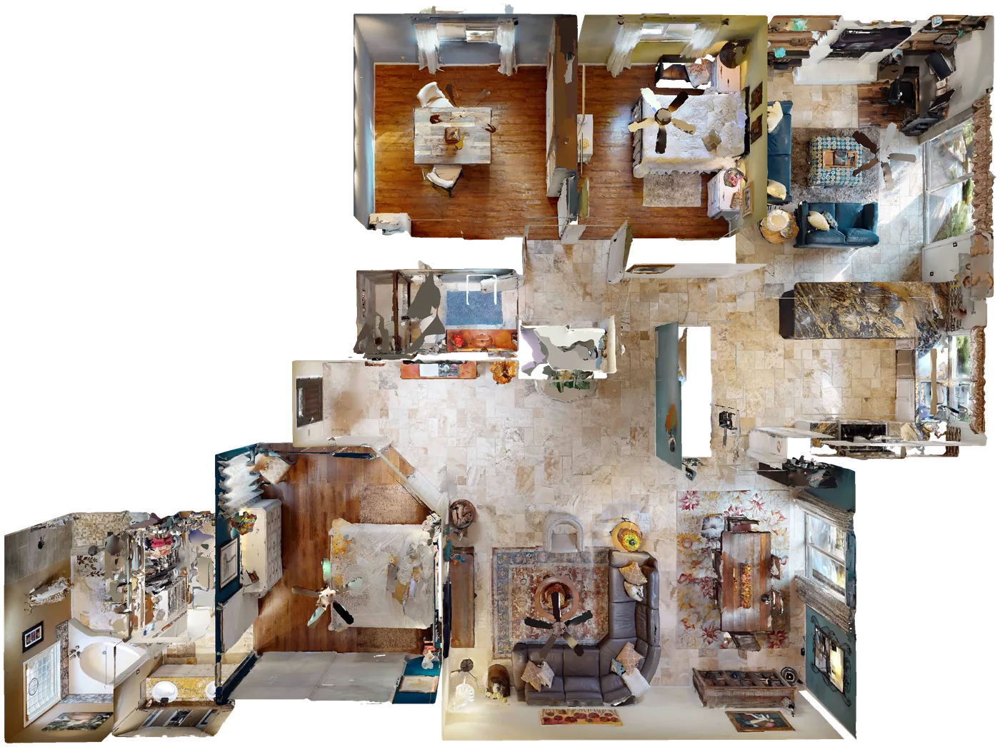
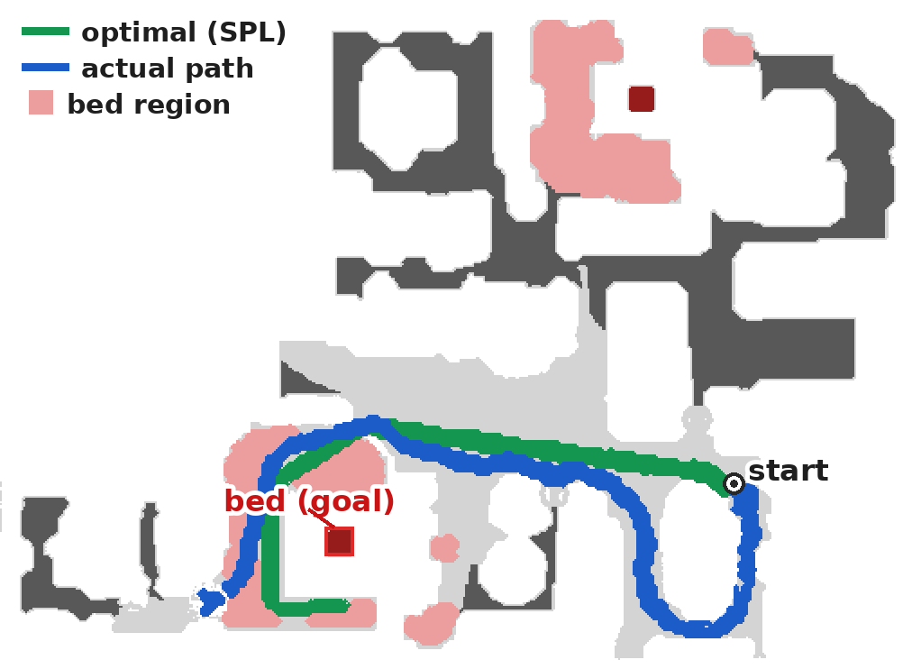
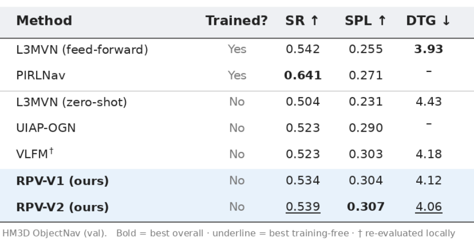

Key idea. Objects the agent can already see (here, a mirror) act as cues for where an unseen target (a toilet) is likely to be, so the agent searches the promising room first.
Walkthrough of an example episode in the Habitat simulator. The agent is tasked with finding a bed in an unseen scene.
Zero-shot ObjectNav methods increasingly use vision-language priors, but direct object-object similarity in the latent space is often a weak proxy for spatial co-occurrence. We present an analytical, training-free semantic navigation pipeline that mediates object relationships through a compact room lexicon. Each object label is mapped to a CLIP-derived Room Probability Vector (RPV), and object-target co-occurrence is computed from RPV distribution overlap. These scores are projected onto a value map using geodesic flood-fill propagation (Fast Marching Method), with adaptive signal decay, and are used to rank frontiers by semantic score for navigation.
Together, these components form an integrated, training‑free, object‑centric pipeline for open‑vocabulary zero‑shot navigation. Results show that our object-centric approach improves Success Rate (SR) and Success by weighted inverse Path Length (SPL) by a relative 3% and 1.3%, respectively, compared to image-holistic baselines on the HM3D dataset validation split, while preserving interpretability and open-vocabulary flexibility.

Overview of the four-stage pipeline.
1. Perception
Object labels and positions are obtained from RGB-D observations. After a preprocessing step to blur out uninformative regions in the RGB image (e.g. walls, ceilings, floors, etc), YOLOE on the LVIS dataset proposes semantic labels for SAM3 to segment.
2. RPV Scoring
Each label is mapped to a CLIP-derived discrete probability distribution over a compact room lexicon (Room Probability Vector; RPV). Co-occurrence estimation with the target (likelihood of detection existence implying target existence) is the overlap of the two distributions.
3. Value Mapping
Scores are projected onto the free space occupancy map using geodesic flood-fill propagation (Fast Marching Method) with adaptive signal decay, such that objects with higher scores have a greater influence.
4. Frontier Navigation
Frontiers are ranked by semantic score, and the agent navigates to the best one until the target is found.

Top-down view of an HM3D scene.

Episode with target “bed”. The agent’s path (blue) is longer than the shortest path (green) that SPL is measured against. Light grey indicates explored space. Dark grey indicates unknown space.

HM3D ObjectNav validation split. SR: success rate. SPL: success weighted by path length. DTG: distance to goal. RPV-V1 and RPV-V2 are variants of our method. RPV-V2 has the highest SPL of all baselines, and the best SR and DTG among training-free baselines.
If you use this work in your research, please cite it as:
@misc{scicluna2026roommediatedcooccurrencezeroshotobjectcentric,
title={Room-Mediated Co-occurrence for Zero-Shot Object-Centric Semantic Navigation via Frontier Scoring},
author={Adam Scicluna and Gavin Paul and Alen Alempijevic},
year={2026},
eprint={2607.25448},
archivePrefix={arXiv},
primaryClass={cs.RO},
url={https://arxiv.org/abs/2607.25448},
}